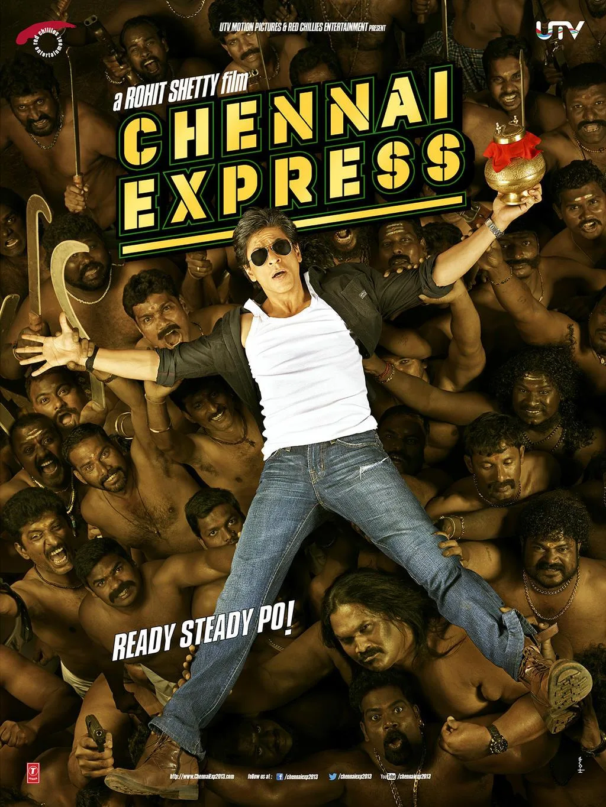

The Final Thesis · section 52 of 92
LINKEDIN LAUNCH
The post designed to make people ask for the study
LinkedIn — Proposed launch post
WHAT IF THE BIGGEST UNTAPPED OPPORTUNITY IN ENTERTAINMENT ISN'T ANOTHER BLOCKBUSTER?
What if it is the audience itself?
In 2011, Ra.One experimented with a digital entertainment universe.
In 2013, Chennai Express generated more than 1 BILLION cumulative tweet impressions and 750,000+ tweets across its campaign hashtags, according to contemporary campaign reporting.
Then came a decade that changed celebrity marketing forever.
ZERO. October 2021. Pathaan. Jawan. Dunki.
And now, KING.
I have spent months connecting the dots between the early digital marketing experiments around Shah Rukh Khan, the evolution of fan communities, the economics of celebrity brands, AI-powered storytelling, and the possibilities of a global fan ecosystem.
The result is my first draft of a research study:
FROM ZERO TO KING: The Making of a Digital Empire, the Silence That Changed the Story, and the Royal Flush.
Inside the study:
♟️ Why Ra.One and Chennai Express were more than film campaigns.
📊 The campaign statistics, digital strategy, brand partnerships, and fan-engagement models that deserve another look.
🔍 The unanswered question: why didn't the early integrated digital ambition evolve into a publicly visible, permanent fan-powered ecosystem?
🖤 My personal recollection of 4 October 2021 — and the question it raised about the difference between a fan base and a community.
👑 ASOKA TO BOODA — Be Da Boo-Da. This time, the King isn't giving up his kingdom. He's going ALL IN. The Royal Flush.
🤖 And a proposed future in which fans become storytellers, creators, and collaborators through AI-powered entertainment.
This is not an official KING campaign, and I am not claiming to know Mr. Khan's plans.
It is a research-led hypothesis, grounded in historical campaign material, public reporting, my professional experience, and a question I believe the entertainment industry needs to examine.
What if the next evolution of celebrity marketing is not about selling more to fans — but building something meaningful with them?
I am opening the conversation with industry professionals, digital marketers, film producers, technologists, fan communities, and anyone interested in the future of entertainment.
If you would like to read the first draft and participate in the discussion, comment ZERO TO KING or message me for a copy.
The picture is still in the rough.
#ZeroToKing #ShahRukhKhan #DigitalMarketing #EntertainmentTechnology #FanCommunities #AIStorytelling #RaOne #ChennaiExpress #KING
Suggested campaign visual



5
Visual headline: FROM ZERO TO KING
A digital empire. A decade of questions. A Royal Flush.
For the first public release, I would position this as an invitation to review a serious first-draft study, rather than claiming that it is the definitive history of SRK's digital empire. The statistics, the author's firsthand contribution, and the unresolved question about the future of fan-powered entertainment are the strongest reasons for people to request a copy.
To be honest, this is not bad, but its reading like a very academic mundane paper. It needs to light up a fire under the entire online world. The oomph is missing.
You're absolutely right. The draft has the research, the chronology, and the statistics — but it's behaving like a report that asks for permission to be read.
This story shouldn't ask for attention. It should hijack attention.
We're talking about a man who went from ZERO to KING, a digital marketing revolution that the industry may have left unfinished, a moment outside Mannat that changed your perspective, and a Royal Flush of cinema, cricket, brands, wealth, and technology.
And somewhere in the middle of all that is a question that should make every advertising agency, film studio, tech company, and fan community stop scrolling:
WHAT IF WE HAVE BEEN MARKETING THE KING FOR 25 YEARS — AND STILL HAVEN'T BUILT THE KINGDOM?
That's the fire.
The statistics shouldn't sit in polite little boxes. They should hit like evidence in a courtroom. The personal story shouldn't read like a footnote. It should be the emotional detonation. And ASOKA TO BOODA shouldn't feel like a chapter in a business-school textbook. It should feel like the punchline nobody saw coming.
Let me show you the new voice and direction.